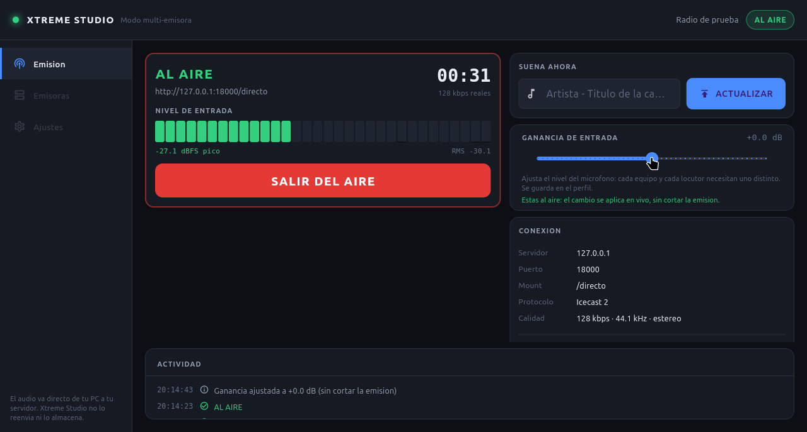
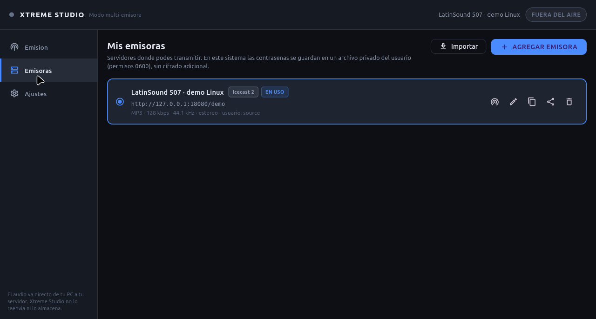
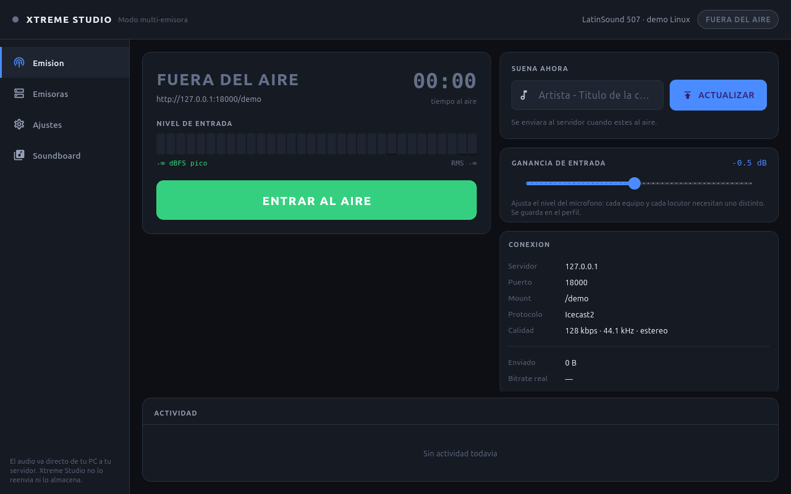

Emisión multi-emisora
Guardá todas tus radios y cambiá de emisora sin reinstalar ni duplicar la app.
Emisión profesional desde tu PC
Xtreme Studio conecta tu micrófono directamente con tu servidor de streaming. Sin cuentas, sin nube, sin plataformas que se queden con tu audio.

Características
Una consola pensada para locutores, no para ingenieros. Lo esencial, bien hecho.
Guardá todas tus radios y cambiá de emisora sin reinstalar ni duplicar la app.
Compatible con Icecast2, Shoutcast v1/v2, AzuraCast, Zeno.fm y hostings compatibles.
Medí pico y RMS, y ajustá la ganancia sin reiniciar el micrófono ni cortar la emisión.
Jingles, cortinas y efectos con teclas rápidas, loop, ducking y cue local.
Guardá una copia de cada emisión con el mismo códec y bitrate que reciben tus oyentes.
DPAPI en Windows y permisos 0600 en Linux. Nunca se envían a un servidor nuestro.
El mismo motor en las dos plataformas. Linux con captura PulseAudio/PipeWire o ALSA.
La app avisa cuando hay una versión nueva y se actualiza con un clic en Windows.
Así se ve
Diseñada para cabina: estados inequívocos, vúmetros grandes y nada que te distraiga.


Descargar
Sin registro. Sin prueba de 7 días. Descargás, configurás tu servidor y salís al aire.
Comprobando la última versión en GitHub…
Ver release en GitHub ↗976435868f956c587bca97c343a321a1b934d21b7b67c2b2fc4be704ef10c5f8
¿Windows lo bloquea? Mirá cómo desbloquearlo. El ejecutable no está firmado; verificá el SHA-256 antes de ejecutar.
Linux x64
Descargá el .tar.gz, extraelo en una carpeta tuya y ejecutá ./xtreme_studio. Las próximas versiones se instalan desde la app, sin volver a compilar.
Últimos cambios
Esto es lo último que cambió en Xtreme Studio.
.tar.gz para Linux x64, sin sudo..update-backup y registro en ~/.xtreme_studio/update.log.Tutoriales
Cuatro pasos. Sin manual de 200 páginas.
En Emisoras → Agregar emisora, cargá el host, puerto, contraseña y protocolo. Elegí Icecast2 o Shoutcast según tu hosting.
source (o el que te hayan dado), mount /stream y contraseña de fuente.En Ajustes → Entrada de audio, elegí tu micrófono o consola. Después, en Emisión, verificá el vúmetro y pulsá Entrar al aire.
Abrí Soundboard, agregá tus archivos y asignales una tecla. Fuera del aire se reproducen por cue local; al aire se mezclan con tu voz.
1–8 o F1–F8.En Windows, la app comprueba si hay una versión nueva al arrancar. Cuando aparece el aviso, salí del aire y pulsá Actualizar.
Canal de YouTube
Tutoriales paso a paso, novedades y transmisiones en vivo. Si el canal todavía no tiene el video que buscás, pedilo en la comunidad.
Apoyá el proyecto
Xtreme Studio es independiente y se mantiene con el tiempo de quien lo desarrolla y el apoyo de quienes lo usan. Tu aporte ayuda con el dominio, las builds, las pruebas y las próximas funciones.
Las donaciones son voluntarias. No compran funciones exclusivas ni soporte prioritario.
Comunidad
Xtreme Studio es un proyecto independiente. Si encontrás un error, tenés una idea o querés contar cómo lo usás, escribinos. Cada comentario se lee.
Acerca de nosotros
Xtreme Studio nació de una idea simple: un locutor debería poder salir al aire con su propio equipo y su propio servidor, sin depender de una plataforma que se quede con su audio, sus datos o su libertad.
Es un proyecto independiente, construido con Flutter y FFmpeg. No hay una empresa detrás ni una nube propia: tu audio va directo de tu PC al servidor de tu radio.
Conocer el proyecto en GitHub ↗Preguntas frecuentes
No. Descargás la app, cargás los datos de tu servidor y listo. No hay registro ni inicio de sesión.
Si habla Icecast2, Shoutcast v1/v2 o es compatible (AzuraCast, Zeno.fm y similares), debería funcionar. Usá “Probar conexión” y, si el tipo de servidor no coincide, la app te lo indica.
En tu equipo. En Windows se cifran con DPAPI; en Linux se guardan en un archivo privado con permisos 0600. No se envían a ningún servidor nuestro.
La app revisa GitHub Releases al arrancar. Si hay una versión nueva, mostramos un aviso y podés actualizar con un clic. La primera instalación de la versión actual se hace manualmente.
La app funciona en Linux y compila desde el código. El actualizador automático de Linux todavía está pendiente; por ahora se actualiza compilando una versión nueva.
MP3 y AAC-LC funcionan con el FFmpeg incluido. AAC+ necesita una build de FFmpeg con libfdk_aac. Hay una build nofree para Windows y las instrucciones completas en el manual. También podés descargar la build nonfree; leé la advertencia de licencia antes de usarla.